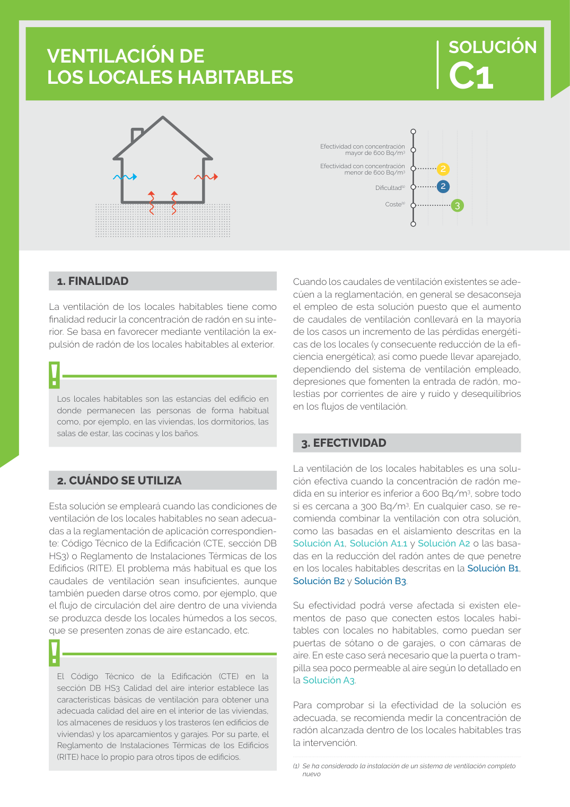

<!doctype html>
<html lang="es"><head><meta charset="utf-8">
<meta name="viewport" content="width=device-width, initial-scale=1">
<title>GUIA · Página física 58</title><link rel="stylesheet" href="../estilo.css">
</head><body>
<nav><a href="../index.html">Índice</a> › <a href="../doc/guia-pdf-f3314b0414fe-sin-fecha-e58e54b822cf.html">GUIA</a></nav>

<h1>GUIA · Página física 58</h1>
<header class="meta"><p><strong>Guia de rehabilitacion frente al radon Fichas</strong> · edición sin-fecha · capa guia</p>
<p>Documento <code>GUIA-PDF-f3314b0414fe</code> · SHA-256 del PDF <code>e58e54b822cf4ab00e258f0eb50c0f06a8c04e3730a7f530d224485e2a5bb02e</code></p>
<p>Página física 58 de 82.</p>
<p><a href="../../contenido/docs/GUIA-PDF-f3314b0414fe/sin-fecha__e58e54b822cf/fuente.pdf#page=58">Copia fiel del PDF fuente</a> · <a href="https://www.codigotecnico.org/pdf/GuiasyOtros/GuiaRadon/Guia_de_rehabilitacion_frente_al_radon+Fichas.pdf">Fuente oficial</a></p>
<p><a href="https://www.codigotecnico.org/Guias/GuiaRadon.html">Ficha de la disposición en la fuente oficial</a></p>
<div class="cita"><p><a href="../../contenido/docs/GUIA-PDF-f3314b0414fe/sin-fecha__e58e54b822cf/fuente.pdf#page=2">Créditos y autoría en el PDF fuente</a>. Reproducción con cita de fuente y autores.</p>
<p>Permiso literal: Se permite la reproducción total o parcial del contenido de este nible en el momento de su publicación. No se aceptará por las institu­ documento siempre y cuando se cite la fuente original</p>
<details><summary>Leer los créditos completos y la autoría</summary><pre class="literal">Este documento ha sido elaborado por el Instituto de ciencias
de la construcción Eduardo Torroja (IETcc) bajo la supervisión
de la Dirección General de Agenda Urbana y Arquitectura del
Ministerio de Transportes, Movilidad y Agenda Urbana (MITMA).

El IETcc, perteneciente al Consejo Superior de Investigaciones
Científicas (CSIC), es el centro de investigación en edificación
de referencia en España. La Unidad de Calidad en la Construc­
ción del IETcc asesora al MITMA en la elaboración del Código
Técnico de la Edificación que, desde el año 2019, cuenta con la
sección HS6 Protección frente a la exposición al radón.

Dirección y Coordinación:
Ministerio de Transportes, Movilidad y Agenda Urbana
 Isabel Marcos Anasagasti
 Raquel Lara Campos
 Eduardo González de Prado
Instituto de ciencias de la construcción Eduardo Torroja CSIC
 Pilar Linares Alemparte

Autoras:
 Pilar Linares Alemparte
 Sonia García Ortega

Colaboradoras:
 Virginia Sánchez Ramos
 Karina Angélica García Pardo

Edita:
 Centro de Publicaciones Secretaría General Técnica
 Ministerio de Transportes, Movilidad y Agenda Urbana©

Entidad colaboradora:
 Consejo Superior de Investigaciones Científicas · CSIC
 Ministerio de Ciencia e Innovación

    Catálogo de publicaciones de la Administración General
    del Estado: publicacionesoficiales.boe.es

    Centro virtual de publicaciones del Ministerio de Transpor­
     tes, Movilidad y Agenda Urbana: www.mitma.gob.es

    Página web del Código Técnico de la Edificación:

                                                                                                                                                                              SECRETARÍA                                                                                                                                                                     GENERAL                                                                                                                                                                         DE    www.codigotecnico.org                                                                                                                                              AGENDA URBANA                                                                                                                                                                           Y VIVIENDA                                                                                                                                                 MINISTERIO                                                                                                           GOBIERNO                                                                                                                           DE                                                                                                                                           TRANSPORTES,                                                                                                                                                 MOVILIDAD                                                                                                             DE ESPAÑA                                                                                                                               Y AGENDA                                                                                                                           URBANA                                                                                                                                                               DIRECCIÓN                                                                                                                                                                     GENERAL                                                                                                                                                                         DE
Maquetación y diseño gráfico:                                                                                                     AGENDA URBANAY ARQUITECTURA
 Lapizmente. Estrategia • Diseño Gráfico


                                                                                                                                             CIENCIAFotografía portada:                                                                                GOBIERNODE ESPAÑA      MINISTERIODEE INNOVACIÓN
 Sonia García Ortega

Los contenidos o ideas recogidas en este documento pertenecen a
sus autores. Este documento está basado en el conocimiento dispo­     Se permite la reproducción total o parcial del contenido de este
nible en el momento de su publicación. No se aceptará por las institu­     documento siempre y cuando se cite la fuente original y a sus
ciones ni los autores implicados responsabilidad de ningún tipo por el                                                                    autores.
uso de estas recomendaciones. Las figuras tienen carácter ilustrativo
y no deben interpretarse como detalles constructivos.</pre></details></div>
<div class="aviso"><strong>Alcance y límites</strong><ul><li>Extracción automática sin revisión técnica humana completa. Contraste tablas, fórmulas, notas y excepciones con el PDF. La edición disponible no determina la vigencia ni la aplicabilidad a un proyecto.</li><li>Guia o documento divulgativo; no es texto normativo.</li><li>Extracción automática; el cotejo humano está pendiente.</li><li>Semántica y tablas no equivalen a validación exhaustiva.</li></ul></div></header>
<nav><a href="guia-pdf-f3314b0414fe-sin-fecha-e58e54b822cf__p0057.html">← Página 57</a> · <a href="guia-pdf-f3314b0414fe-sin-fecha-e58e54b822cf__p0059.html">Página 59 →</a></nav>
<p>Formato: <a href="../../contenido/docs/GUIA-PDF-f3314b0414fe/sin-fecha__e58e54b822cf/pagina/p0058.md">Texto de la página (Markdown)</a></p>
<p><a href="../../contenido/docs/GUIA-PDF-f3314b0414fe/sin-fecha__e58e54b822cf/bloque/p0058.json">JSON de bloques</a></p>
<pre class="literal">Efectividad con concentración 
mayor de 600 Bq/m3
Efectividad con concentración 
menor de 600 Bq/m3
Dificultad(1)
Coste(1)
2
2
3
VENTILACIÓN DE
LOS LOCALES HABITABLES
SOLUCIÓN
C1
Cuando los caudales de ventilación existentes se ade­
cúen a la reglamentación, en general se desaconseja 
el empleo de esta solución puesto que el aumento 
de caudales de ventilación conllevará en la mayoría 
de los casos un incremento de las pérdidas energéti­
cas de los locales (y consecuente reducción de la efi­
ciencia energética); así como puede llevar aparejado, 
dependiendo del sistema de ventilación empleado, 
depresiones que fomenten la entrada de radón, mo­
lestias por corrientes de aire y ruido y desequilibrios 
en los flujos de ventilación.
3. EFECTIVIDAD
La ventilación de los locales habitables es una solu­
ción efectiva cuando la concentración de radón me­
dida en su interior es inferior a 600 Bq/m3, sobre todo 
si es cercana a 300 Bq/m3. En cualquier caso, se re­
comienda combinar la ventilación con otra solución, 
como las basadas en el aislamiento descritas en la 
Solución A1, Solución A1.1 y Solución A2 o las basa­
das en la reducción del radón antes de que penetre 
en los locales habitables descritas en la Solución B1, 
Solución B2 y Solución B3.
Su efectividad podrá verse afectada si existen ele­
mentos de paso que conecten estos locales habi­
tables con locales no habitables, como puedan ser 
puertas de sótano o de garajes, o con cámaras de 
aire. En este caso será necesario que la puerta o tram­
pilla sea poco permeable al aire según lo detallado en 
la Solución A3.
Para comprobar si la efectividad de la solución es 
adecuada, se recomienda medir la concentración de 
radón alcanzada dentro de los locales habitables tras 
la intervención.
1. FINALIDAD
La ventilación de los locales habitables tiene como 
finalidad reducir la concentración de radón en su inte­
rior. Se basa en favorecer mediante ventilación la ex­
pulsión de radón de los locales habitables al exterior.
Los locales habitables son las estancias del edificio en 
donde permanecen las personas de forma habitual 
como, por ejemplo, en las viviendas, los dormitorios, las 
salas de estar, las cocinas y los baños.
2. CUÁNDO SE UTILIZA
Esta solución se empleará cuando las condiciones de 
ventilación de los locales habitables no sean adecua­
das a la reglamentación de aplicación correspondien­
te: Código Técnico de la Edificación (CTE, sección DB 
HS3) o Reglamento de Instalaciones Térmicas de los 
Edificios (RITE). El problema más habitual es que los 
caudales de ventilación sean insuficientes, aunque 
también pueden darse otros como, por ejemplo, que 
el flujo de circulación del aire dentro de una vivienda 
se produzca desde los locales húmedos a los secos, 
que se presenten zonas de aire estancado, etc.
El Código Técnico de la Edificación (CTE) en la 
sección DB HS3 Calidad del aire interior establece las 
características básicas de ventilación para obtener una 
adecuada calidad del aire en el interior de las viviendas, 
los almacenes de residuos y los trasteros (en edificios de 
viviendas) y los aparcamientos y garajes. Por su parte, el 
Reglamento de Instalaciones Térmicas de los Edificios 
(RITE) hace lo propio para otros tipos de edificios.
(1)  Se ha considerado la instalación de un sistema de ventilación completo 
nuevo
</pre>
<figure><a href="../../contenido/docs/GUIA-PDF-f3314b0414fe/sin-fecha__e58e54b822cf/figura/p0058.png"></a><figcaption>Página visual 58, para contrastar fórmulas, tablas y figuras.</figcaption></figure><h2>Tablas extraídas</h2><p>Datos candidatos: compruebe celdas y notas en el PDF.</p><ul><li><a href="../../contenido/docs/GUIA-PDF-f3314b0414fe/sin-fecha__e58e54b822cf/tabla/p0058_t01.json">p0058_t01.json</a></li></ul>
<h2>Segmentos que incluyen esta página</h2><ul>
<li><a href="../apartado/guia-pdf-f3314b0414fe-sin-fecha-e58e54b822cf__a0203.html">a0203 · Solucion C1 - Ventilacion de los locales habitables</a></li>
<li><a href="../apartado/guia-pdf-f3314b0414fe-sin-fecha-e58e54b822cf__a0204.html">a0204 · Solucion C1 - Ventilacion de los locales habitables / VENTILACIÓN DE LOS LOCALES HABITABLES</a></li>
<li><a href="../apartado/guia-pdf-f3314b0414fe-sin-fecha-e58e54b822cf__a0205.html">a0205 · Solucion C1 - Ventilacion de los locales habitables / SOLUCIÓN C1</a></li>
<li><a href="../apartado/guia-pdf-f3314b0414fe-sin-fecha-e58e54b822cf__a0206.html">a0206 · 3. EFECTIVIDAD</a></li>
<li><a href="../apartado/guia-pdf-f3314b0414fe-sin-fecha-e58e54b822cf__a0207.html">a0207 · 1. FINALIDAD</a></li>
<li><a href="../apartado/guia-pdf-f3314b0414fe-sin-fecha-e58e54b822cf__a0208.html">a0208 · 2. CUÁNDO SE UTILIZA</a></li>
</ul>
<footer>Generado estáticamente desde el corpus normalizado; sin JavaScript ni servicios externos. El HTML es una vista reproducible; conserve la fuente y la edición al citar.</footer>
</body></html>
